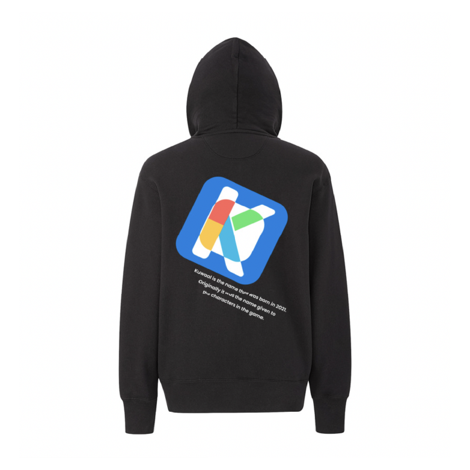
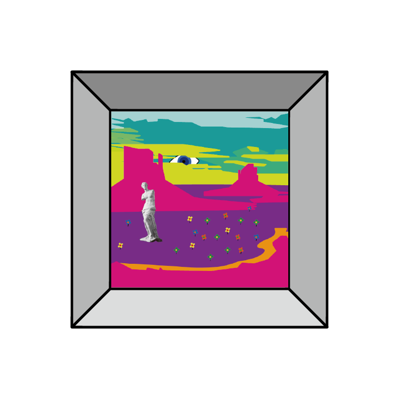
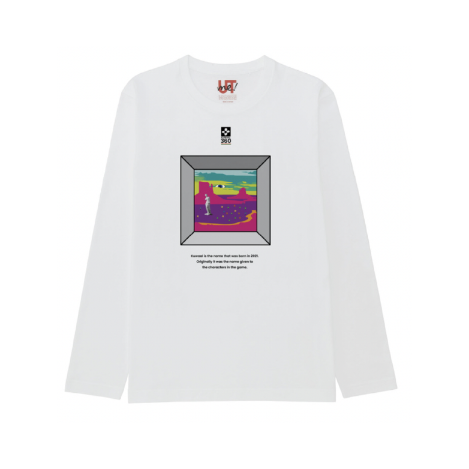
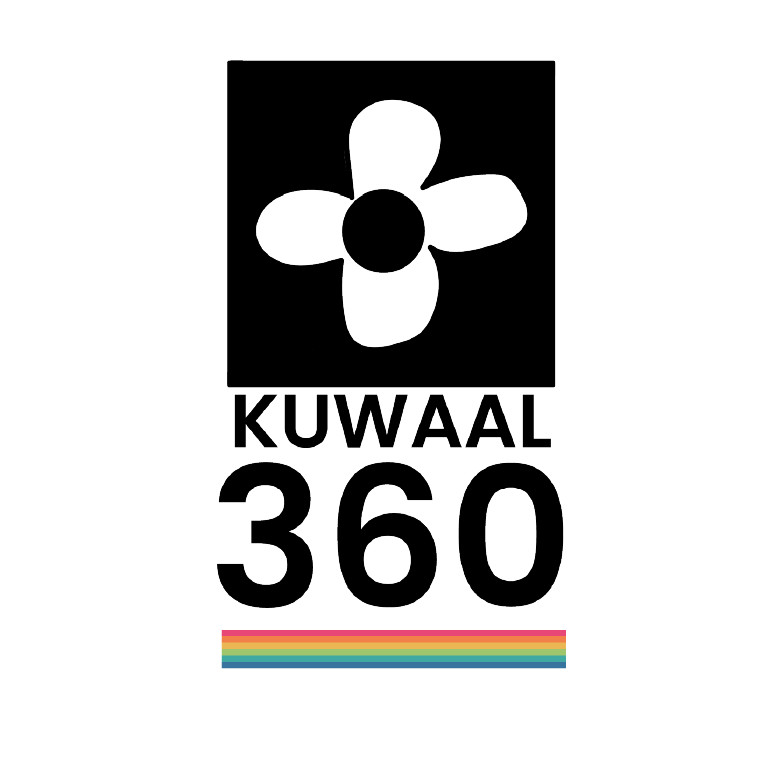
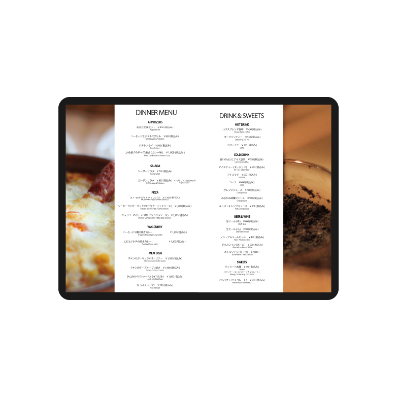

YouTube
Instagram
Top.
About me.
Interaction.
Movie & Animation.
動画を再生できる環境ではありません。
「Kuwaal Logo Type1」
趣味で作成
Kuwaalという自身の架空のアーティスト・ブランドのロゴを作成。親しみやすいようGoogleのロゴをモチーフにしている。

Kuwaal Logo Type1を服にプリントしたもの

「Kuwaal Canyon」
趣味で作成
広大なグランドキャニオンをイメージした絵。広大な土地に住む我々を表現している。目に見立てた太陽は、政府やメディア、インターネットの監視の目を表している。

Kuwaal Canyonを服にプリントしたもの
「Kuwaal Flower」
趣味で作成
鼻と葉で自然の自由さとしなやかさを表現している。
Kuwaal Flowerを服にプリントしたもの

「Kuwaal Logo Pt2.」
趣味で作成
Kuwaalのサブロゴ。360は円の連続性を表し、下の色は多様な生活スタイルを表現している。

「menu」
レストランのメニュー。実家がレストランを営んでおり、その冬用メニューのため製作。
Page Top